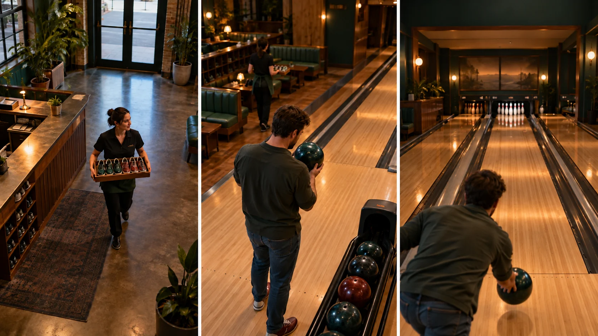

F04 · 중급 · FPV
볼링장의 공간을 이야기로 잇기
직원·이용자·행동 결과 사이에서 시선을 넘기며 다음 공간으로 갈 이유를 설계한다.
그림에서 확인할 세 가지다음 공간으로 갈 이유를 만든다
1직원에서 이용자로
입구 직원의 신발 쟁반과 이동 방향을 본다. 서비스가 누구에게 이어질지 예고하는 행동이 다음 인물로 관심을 넘기는 단서가 된다.
2공을 준비하는 행동
두 번째 화면에서는 방 전체보다 볼러의 준비 동작이 중심이 된다. 앞 장면의 서비스와 다음 장면의 경기가 연결되는 이유를 읽는다.
3레인이라는 목적지
마지막 화면은 공이 향할 곳과 이용자의 위치를 함께 남긴다. 사람의 행동과 목적지를 함께 보아야 레인이 단순 배경보다 이야기의 일부가 된다.
촬영 설계
촬영을 이렇게 설계한다
행동의 목적을 고른다
가상 매장에서는 직원이 신발을 건네고 이용자가 공을 준비하는 식으로 각 인물의 목적을 정한다. 카메라를 향한 장식적 동작이 아니라 다음 공간과 연결되는 행동을 선택한다.
관심을 넘기는 지점을 잡는다
첫 인물이 화면을 떠나기 전에 다음 행동의 단서를 보이게 한다. 학습안에서는 직원의 이동 방향과 볼러가 준비하는 방향을 연결해 카메라가 왜 그쪽으로 가는지 이해되도록 만든다.
소리를 별도로 설계한다
제작진은 드론 소음 때문에 후반에 소리를 더했다고 밝혔다. 적용할 때도 비행 원음만 기대하지 말고 공·발걸음·대화 등 화면에 필요한 사건의 소리를 별도 목록으로 정리한다.
제작자 인터뷰는 동네 볼링장의 활동을 한 테이크로 보여주고 소리는 후반에 더했다고 설명한다.
원본 영상Right Up Our Alley
1. 다음 공간으로 갈 이유
직원의 손과 이동 방향이 다음 인물로 관심을 넘기는지 본다. 문이 있다는 사실보다 행동의 연결이 이동을 설득한다.
2. 행동과 결과
볼러의 준비와 레인의 목적지를 함께 비교한다. 준비만 지나치거나 결과 공간을 너무 늦게 보이면 동작의 뜻이 약해진다.
3. 화면 밖의 제작
제작 노트의 후반 음향 설명을 확인한다. 자연스럽게 들리는 공간 소리가 드론 카메라의 현장 원음이라는 가정은 하지 않는다.
재생이 제한되면 원본 영상 새 창을 이용하세요.
제작진 설명 · 한국어 요약 번역
한 테이크의 준비와 반복
연출 원칙
번역 요약: 감독 Anthony Jaska는 CGI 없이 실제 한 테이크로 찍었고 소리만 후반에 더했다고 설명한다.
답사
항공 촬영감독 Jay Christensen은 촬영 전날 미네소타 볼링장을 찾아 비행 경로를 구상했다.
반복 촬영
촬영은 밤에 진행되었고 원하는 테이크를 얻기까지 약 두 시간 동안 열 번 남짓 시도했다.
후반 소리
드론 소음 때문에 볼링공, 핀, 대화, 잔 부딪힘 소리는 후반에 입혔다.
제작진 설명 · 한국어 요약 번역
동선 구성과 제작 목적
외부에서 실내
번역 요약: 드론은 건물 밖에서 출발해 길을 건너 출입문을 지나 실내로 들어간다.
실내 동선
이어 볼링을 치고 술 마시는 사람들 사이와 볼링공을 닦는 사람의 다리 사이를 지난다.
마지막에는 핀을 정리하는 안쪽 공간으로 들어가 결말을 열어 둔 채 끝난다.
제작 목적
목적은 코로나 방역이 완화되던 시기에 지역 업소를 다시 알리는 것이었다.
Kling 프롬프트단문 인과 체인 · 16:9
내가 직접 만들어 본다
직원의 행동이 다음 인물로 시선을 넘기고, 이용자의 행동이 레인이라는 목적지로 카메라를 이끄는 인과를 지시한다.
- S01볼링장 입구에 신발 쟁반을 든 직원이 서 있다.
- S02영상은 하나의 연속 쇼트다.
- S03화면에 드론 기체는 나오지 않는다.
- S04처음 10초 동안 카메라는 직원의 손과 신발에 머문다.
- S05직원이 신발을 이용자에게 건넨다.
- S06직원이 손짓한 쪽으로 이용자가 걸어간다.
- S07다음 10초 동안 이용자가 레인 쪽으로 걸어간다.
- S08이용자가 걸어가기 때문에 카메라가 따라 움직인다.
- S09이용자가 레인 앞에서 공을 집어 든다.
- S10마지막 10초 동안 카메라는 이용자 어깨 너머로 레인을 바라본다.
- S11이용자가 공을 굴린다.
- S12공이 굴러가자 레인이 화면의 목적지가 된다.
- S13사람과 레인이 한 화면에 함께 남는다.
[네거티브]
- 직원이 쟁반 없이 카메라만 쳐다보며 서 있는 것 금지
- 컷이 나뉘어 볼링장이 여러 장면으로 끊기는 것 금지
- 화면에 드론 기체가 나타나는 것 금지
- 카메라가 직원에게서 일찍 벗어나 볼링장 전체를 훑는 것 금지
- 직원이 신발을 이용자가 아닌 카메라 쪽으로 내미는 것 금지
- 이용자가 직원의 손짓과 다른 방향으로 걸어가는 것 금지
- 이용자가 멈춰 있는데 카메라만 먼저 앞서 나가는 것 금지
- 카메라가 이용자를 앞질러 이동의 이유가 사라지는 것 금지
- 이용자가 공을 집지 못하고 빈손으로 서 있는 것 금지
- 카메라가 이용자 정면으로 돌아 레인이 화면 뒤로 숨는 것 금지
- 공이 레인이 아닌 엉뚱한 곳으로 굴러가는 것 금지
- 공이 사라져 레인이 그저 배경으로만 남는 것 금지
- 이용자가 화면 밖으로 나가 레인만 남는 것 금지
- S01영상은 FPV 시점의 하나의 연속 쇼트다.
- S02화면에 드론 기체는 나오지 않는다.
- S03볼링장 입구에 신발 쟁반을 든 직원이 서 있다.
- S04처음 10초 동안 카메라는 입구 천장에서 직원의 손으로 급강하한다.
- S05직원이 신발을 건네는 순간 카메라는 손 옆을 스치며 지난다.
- S06직원이 손짓한 쪽으로 이용자가 걸어간다.
- S07손짓이 이유가 되어 카메라는 이용자를 향해 질주한다.
- S08목적지가 보이지 않기 때문에 카메라는 점점 속도를 높인다.
- S09다음 10초 동안 카메라는 의자 등받이 위를 낮게 스친다.
- S10카메라는 두 이용자의 어깨 사이를 비집고 통과한다.
- S11이용자가 공을 집어 들자 카메라가 한가운데서 빙글 돈다.
- S12도는 동안 사방의 레인과 의자가 차례로 스쳐 지나간다.
- S13한 바퀴를 돌아 카메라는 이용자 등 뒤에 도착한다.
- S14마지막 10초 동안 이용자가 공을 굴린다.
- S15공이 굴러가자 카메라는 레인 위로 쏟아지듯 날아간다.
- S16카메라는 공이 닿기 전에 급감속하며 멈춘다.
- S17이용자의 어깨와 레인이 한 화면에 함께 남는다.
- S18그 결과 직원의 손짓에서 레인까지 한 이야기로 이어진다.
[네거티브]
- 영상이 여러 컷으로 끊겨 이어지는 것 금지
- 화면에 드론 기체가 나타나는 것 금지
- 직원과 쟁반이 화면에 없는 것 금지
- 카메라가 멀리서 내려다보기만 하는 것 금지
- 신발 건넴이 화면 밖에서 일어나는 것 금지
- 손짓과 이용자 이동이 따로 노는 것 금지
- 이유 없이 카메라가 공간만 훑는 것 금지
- 속도가 일정해 가속이 느껴지지 않는 것 금지
- 카메라가 높은 곳에서 안전하게 나는 것 금지
- 사람들과 멀리 떨어져 지나가는 것 금지
- 공을 드는 행동과 회전이 무관한 것 금지
- 도는 동안 풍경이 바뀌지 않는 것 금지
- 한 바퀴 뒤 이용자를 놓치는 것 금지
- 공 굴림이 화면에 담기지 않는 것 금지
- 공이 굴러가도 카메라가 가만히 있는 것 금지
- 속도가 줄지 않고 레인 끝까지 가는 것 금지
- 사람이 사라지고 레인만 남는 것 금지
- 장소만 나열되고 이야기가 끊기는 것 금지
결과에서 볼 것
- 직원의 손짓이 이용자의 이동 방향을 정했는가
- 카메라가 움직인 이유가 이용자의 걸음이었는가
- 마지막에 사람과 레인이 함께 읽혔는가